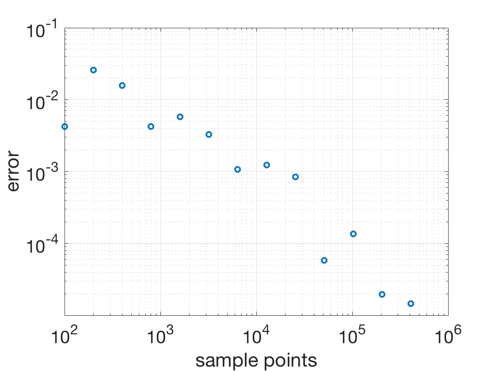
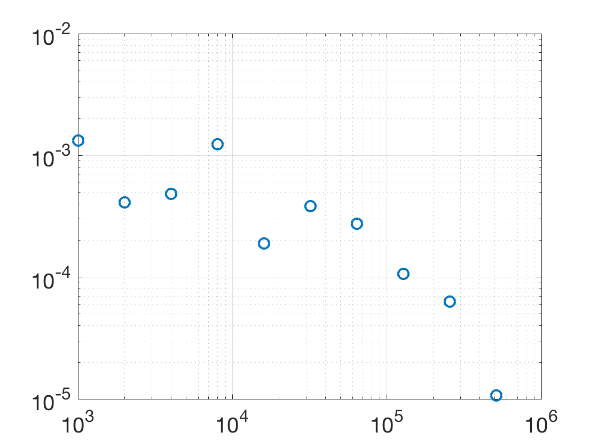

Additional Examples 9.2
1 Consider the region inside the circle of radius 1 centered at \( (1,0)\) but outside the ellipse \(x^2+4y^2 = 4.\) Find a quasi-random Monte-Carlo approximation of the area and compare with the pseudo-random approximation in Additional Example 9.1.2.
The region consists of two equal slices. The one in the first quadrant is contained in the rectangle \([0,2]\times[0,1]\), so we carry out a Type 2 Monte Carlo estimate by producing uniform quasi-random points in the rectangle, counting the proportion that lie inside the circle and outside the ellipse, and multiplying by 2, the area of the rectangle, to estimate the area of the slice. The quasi-random points are produced using Halton sequences with \(p=2\) for the \(x\)-coordinate and \(p=3\) for the \(y\)-coordinate. Multiplying by 2 yields the total area of the two slices. The plot shows the error versus the number of sample points in the Monte Carlo estimate.

2 (a) Use calculus to find the average determinant of a \(2\times 2\) symmetric matrix with uniform random entries from \([0,1]\). (b) Carry out a Monte Carlo estimate of the average with pseudo-random numbers.
(a) The expected value of the determinant is
\( {\mathbb E}(ac-b^2)\) where \(a, b\) and \(c\) are uniform random numbers in \([0,1].\) Since \(a\) and \(c\) are independent, we calculate
\[ {\mathbb E}(ac-b^2) = {\mathbb E}(a) {\mathbb E}(c) - {\mathbb E}(b^2)
= \frac{1}{2}\frac{1}{2} - \int_0^1 x^2\ dx = \frac{1}{4}-\frac{1}{3} = -\frac{1}{12}.
\]
(b) Averaging the determinants with \(a, b\) and \(c\) chosen uniformly from \([0,1]\) results in the following typical plot.
